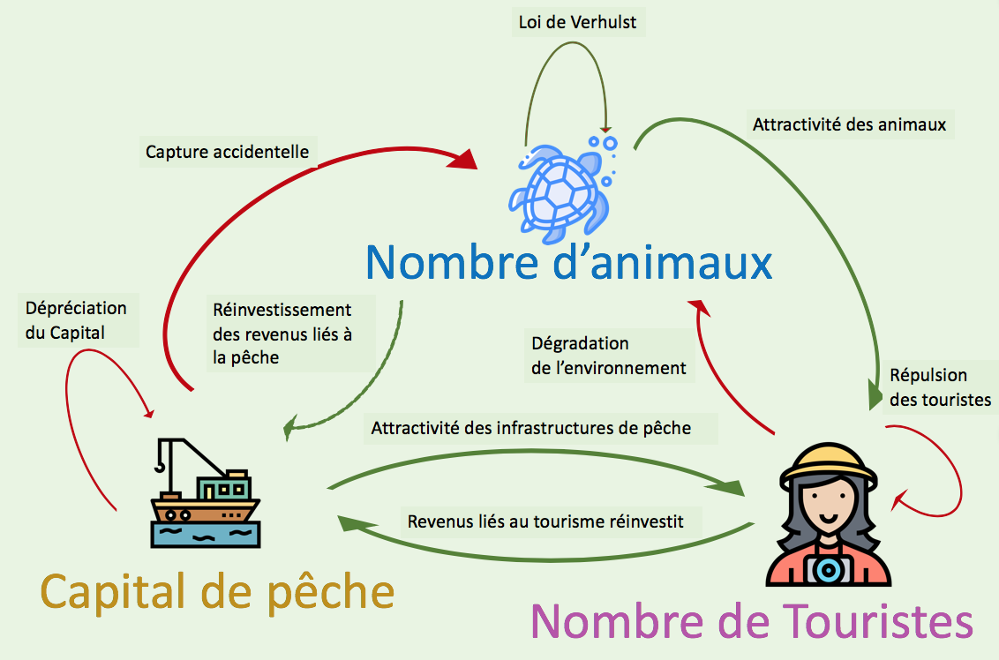
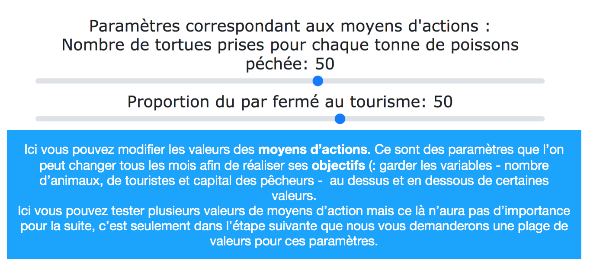

Informations sur la dynamique et choix des paramètres :
Dans la page suivante, nous allons vous montrez les estimations prévues par les experts pour l'avenir de l'aire protégée.
Ces prévisions sont faites grâce au modèle ci dessous où l'on voit l'action des différentes variables les unes sur les autres. Par exemple,
le nombre de touristes influe négativement le nombre de tortues à cause de la dégradation de leur environnement.

Il se peut que vous ne soyez pas d'accord avec les prédictions proposées, vous pensez peut-être qu'elles sont trop optimistes ou pessimites, que les valeurs choisies pour certains paramètres sont trop petites ou trop grandes. Dans ce cas il vous est possible de modifier certaines valeurs de paramètres grâce à des sliders. Il vous suffit ensuite d'appuyer sur le bouton calculer pour voir l'influence de vos modifications.

Il existe des paramètres spéciaux qui sont modifiables tous les mois et qui correspondent aux moyens d'actions. Ici vous pouvez les modifier mais la valeur finale que vous leur donnez ne sera pas prise en compte. En effet, dans la suite pous pourrez choisir une plage de valeurs pour ces paramètres.
